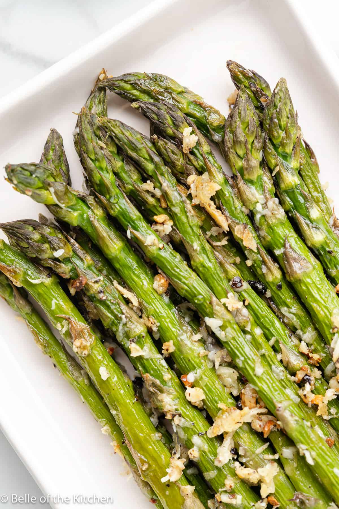

Garlic Parmesan Roasted Asparagus

Description:
This Garlic Parmesan Roasted Asparagus recipe is made with just a few simple ingredients and is the perfect side dish for any meal. Crisp, yet tender asparagus is seasoned with salt and pepper, then coated with olive oil, garlic, and parmesan cheese before roasting in the oven. This is the BEST way to cook asparagus!
Ingredients:
- 1/2 pound fresh asparagus
- 1/2 teaspoon salt
- 1/2 teaspoon freshly ground black pepper
- 3 cloves minced garlic
- 2-3 Tablespoons parmesan cheese
- Olive oil spray
Directions:
- Preheat oven to 425 degrees. Line a rimmed baking sheet with aluminum foil and set aside.
- Rinse the asparagus and trim off woody end pieces. Spread out in a thin layer on top of the prepared baking sheet.
- Spray the asparagus lightly with a coat of olive oil spray. Sprinkle with salt, pepper, garlic, and parmesan cheese. Use your hands to mix the asparagus with all of the ingredients, then lay it out into an even layer again. Spray with one more light coat of olive oil.
- Bake in the preheated oven for 8-9 minutes. Remove from oven and serve immediately. Enjoy!